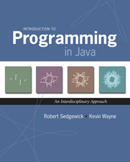
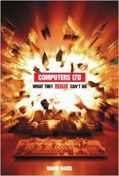
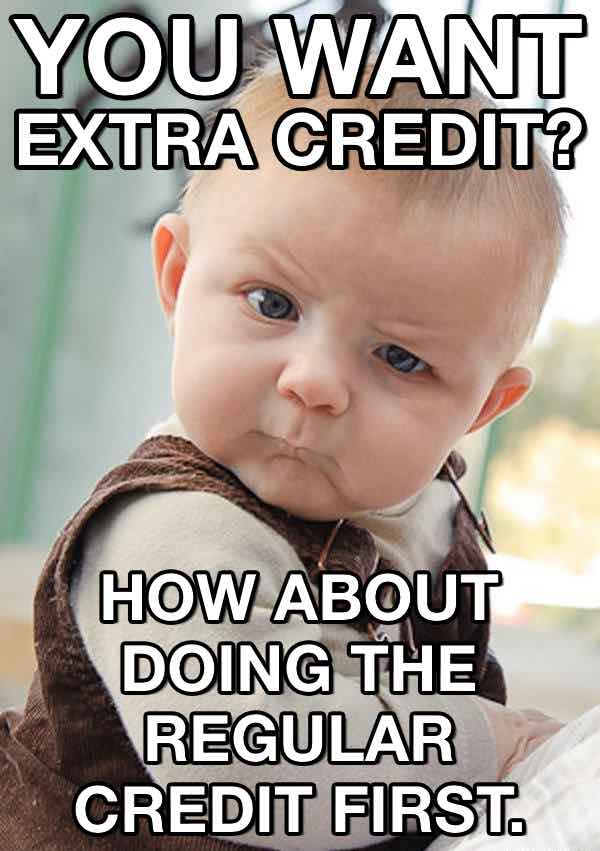

Description. This course is an introduction to computer science in the context of scientific, engineering, and commercial applications. The goal of the course is to teach basic principles and practical issues, while at the same time preparing students to use computers effectively for applications in computer science, physics, biology, chemistry, engineering, and other disciplines. Topics include: programming in Java; hardware and software systems; algorithms and data structures; fundamental principles of computation; and scientific computing, including simulation, optimization, and data analysis.
Prerequisites. None.
Lectures. Lectures meet twice a week, on Tuesday and Thursday mornings.
Precepts. Precepts meet twice a week, on either Tuesdays & Thursdays or Wednesdays & Fridays.
Readings. Both of these books are available at Labyrinth Bookstore and on reserve at the Engineering Library in the Friend Center.
|  |
Required reading. R. Sedgewick and K. Wayne, Introduction to Programming in Java: An Interdisciplinary Approach, Addison-Wesley, 2007. ISBN 0-321-49805-4. We will be referencing this text all semester. The lectures are based on its contents. |
|---|---|
|  |
Suggested reading.D. Harel, Computers Ltd.: What They Really Can't Do, Oxford, 2003. ISBN 0-19-860442-4. This is an introduction to theory that will assist you in the second half of the semester. |
Instructor. Douglas Clark.
Lead Preceptors. Donna Gabai, Maia Ginsburg, Dan Leyzberg.
Undergraduate coordinator. For enrollment problems, please contact Colleen Kenny-McGinley.
Website.This website contains a wealth of resources for students to practice and study computer science, including archives of lecture slides, online programming activities with solutions, a Java visualizer, and the past five years of exams with solutions. This site can be found at the following address: http://www.princeton.edu/~cos126
Software.This course has an associated software package called introcs that enables students to write and test code. Students may install it on their own computer by following the instructions for their operating system, whether they are running Windows, Mac, or Linux.
Cluster computers.For students who may not have a computer or for students whose computers fail during the semester, we provide cluster machines in Friend Center 017 with the course software pre-installed. Click here for information on using the labs.
Weighting The semester grades are composed of two two-part exams, worth a combined 50% of the grade, nine weekly programming assignments worth 40%, and one final programming project worth the remaining 10.
Curve. Unfortunately, there is no curve in COS 126. You should expect the grade cutoff for an "A" to be approximately 93% of the available points, an "A-" requires 90% and so on.
Midterm exams. There are two two-part exams during the semester. One will be given in middle of the semester, and one in the last week of classes. Both exams consist of a written portion, worth 70% of the exam grade, and a programming portion, worth the remaining 30. There will be no final.
Programming assignments. There are nine weekly programming assignments all equally weighted. They are due Monday nights.
Final project. The final project is a large programming assignment (approximately the size of two of the weekly assignments) due at the end of Reading Period.
Late submissions. All assignments are due at midnight. Submissions made at 12:01am will be marked late. If any part of an assignment is submitted late, the entire assignment will be marked late. Student have four free late days to use as they wish throughout the semester on the nine programming assignments. There are no partial late days. Students who submit late work, after they have used up all four free late days will lose 20% of the possible points on the late assignment per day or partial day late thereafter. Outside of this late day policy, the only late work that will be excused are for students in medical or personal distress as indicated by a letter from their Dean, Director of Studies, or from McCosh Health Center. We will not accept any work for this semester after Dean's Date.
Extra credit. Some of the assignments in this course feature optional extra credit sections intended for students who have completed every other part of the assignment first. In COS 126, extra credit points are only given a small discretionary value at the end of the term. Rather than adding the extra credit points to the total number of earned points in the semester, the course staff considers extra credit for students who end the semester close to a grade boundary, potentially pushing an "A-" to an "A" for example. Note that extra credit sections have stricter collaboration and late policies than the rest of the assignment. Extra credit may not be submitted late under any circumstances. Extra credit may not be discussed, even conceptually, with anyone except the course staff. Even then, course staff are only permitted to clarify the wording of the extra credit, like we would on an exam question. We do not want staff to give students hints or tips on extra credit nor help debug a student's extra credit code. Students working on a partnered assignment may choose to do the extra credit individually or together.
Regrading. To err is human. We may make a mistake while grading your work. To request a regrade, please write a short note describing the potential mistake atop the graded work and return it to your preceptor within two weeks of that work being handed back.
Auditing. Auditors must identify themselves to the lead preceptors via email as soon as possible. Auditors will receive only automated feedback on work (i.e. immediate feedback in the submission system, as well as an e-mailed copy of the testing performed on their submissions). To earn audit credit, you must: complete all of the programming assignments and the final project, using at most four late days. Auditors do not take the exams in this course.
Context. COS 126 is a difficult course that requires a significant time committment. Do not take shortcuts. Learn the material. If you fall behind, the course staff will meet with you one-on-one to catch you up. Email the lead preceptors and we will arrange as much help for you as we can. Unfortunately, despite the massive amount of support offered to students in this course, some students plagiarize their assignments by copying code from their peers, from former students, or from online sources. We want students to be aware that we actively police the submissions made to us for each assignment, and that although we take no pride in bringing plagiarism cases to the Committee on Discipline, we feel it is a necessary evil to keep the playing field level for the vast majority of our students who put in a lot of hard work to get their programs to work properly. We strongly encourage you to reach out for help from the course staff rather than resorting to plagiarism. The following text outlines exactly what is allowed and not allowed in our course. Please read it carefully. Should you have any questions about the policy, please post them to our Piazza.
| ... your partner. | ... the course staff. | ... a COS 126 alum. | ... a classmate. | ... other people. | |
|---|---|---|---|---|---|
| Discuss concepts with... | ✔ | ✔ | ✔ | ✔ | ✔ |
| Acknowledge collaboration with... | ✔ | ✔ | ✔ | ✔ | ✔ |
| Expose your code/work to... | ✔ | ✔ | ✔ | ✘ | ✘ |
| View the code/work of... | ✔ | ✘ | ✘ | ✘ | ✘ |
| Copy code/work from... | ✘ | ✘ | ✘ | ✘ | ✘ |
External sources. Students are not permitted to use any reference material containing code, including websites and online forums, not affiliated with this course. Students must acknowledge any and all help received on assignments in the readme.txt file submitted with each assignment. Students may not post questions about the course or about assignments on any website not affiliated with this course. Instead of looking at external materials, students are encouraged to post questions to Piazza.
Abetting plagiarism. Students must keep the work they produce for this course, including code, comments, readme files, and any other work product, absolutely private and confidential. Sharing work with any student, whether that student is in the course or not in the course, is considered abetting plagiarism -- a serious offense prosecuted by the Committe on Discipline. This policy applies regardless of the method of sharing: whether a student emails his/her work to another student, hands a physical copy of his/her work to another student, posts his/her work to a website or repository where another student can access it, or shares his/her password with another student. This policy applies to finished work as well as to unfinished work, graded and ungraded. This policy applies during the semester as well as after the semester. The course staff maintains an archive of all of work submitted to us in the last ten years. We can and do prosecute students who plagiarize from previous submissions. Students are encouraged to ask the course staff, ideally over Piazza, if they have any reason to be concerned that what they're doing constitutes plagiarism.